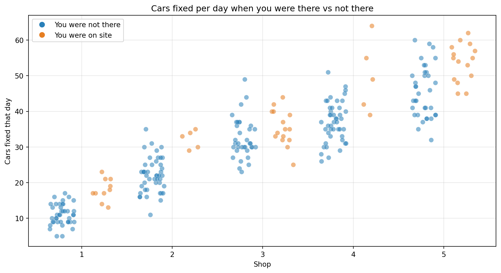
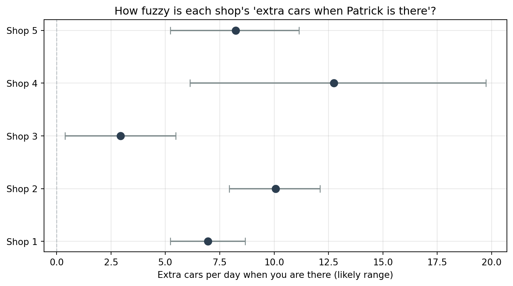
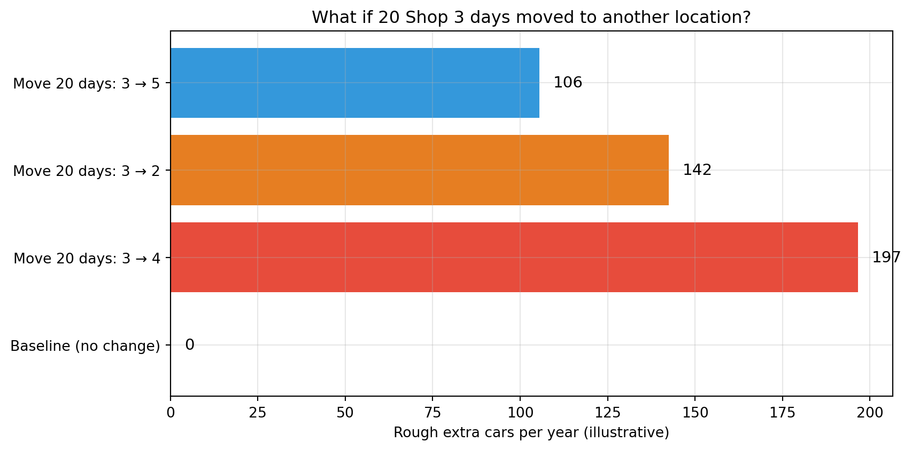

Scheduling Report for Patrick
Where Showing Up Moves the Most Cars Through the Doors
Executive summary (plain English)
Patrick, you wanted to know: if you spend a day at one location instead of another, where does your being there actually show up in the work count?
We looked at 50 days of records across five shops. Think of that as 250 separate snapshots: each snapshot is “one shop, one day,” with how many cars got finished that day and whether you were on site.
What we found
- Shops 4 and 2 are where your visits line up with the biggest bump in cars completed versus days you were not there.
- Shop 3 shows the smallest bump. That does not mean Shop 3 is a bad shop or that you should feel guilty about family there—it means your time on the floor moves the needle least there, compared with 4 and 2.
How seriously to take the exact numbers
You were not recorded at every shop equally often. Some locations only have a few “Patrick was here” days in this file. So treat the figures as rough guides, not promises. They still tell a useful story about where your presence shows up most.
What we measured
Each dot in Figure 1 is one shop, one day: how many cars were fixed that day, and whether you were there. (The dots are nudged slightly left or right so overlapping points do not stack on top of each other—that is all “jitter” means.)
Table 1 is the scorecard: for each shop, average cars on days you were there versus average cars on days you were not, and the extra cars per day when you show up (the difference).
| n_absent | mean_absent | n_present | mean_present | lift_cars_per_day | |
|---|---|---|---|---|---|
| shopID | |||||
| 1 | 40 | 10 | 11.05 | 18.00 | 8.00 |
| 2 | 45 | 5 | 22.13 | 32.20 | 27.20 |
| 3 | 35 | 15 | 32.46 | 35.40 | 20.40 |
| 4 | 45 | 5 | 37.02 | 49.80 | 44.80 |
| 5 | 35 | 15 | 45.51 | 53.73 | 38.73 |
How to read it: Shops 4 and 2 show the largest extra cars per day when you are there. Shop 3 shows a small bump. Again: small bump at 3 is about your impact when you visit, not whether the crew there is any good.
How sure can we be?
Fifty days is a start, not a lifetime of data. At some shops, “Patrick was here” only happened a few times in the file (see how many days are in each column in Table 1). When the counts are low, one unusually busy or slow stretch can pull the averages up or down.
The next chart is our way of saying “the truth might sit somewhere in this band.” We ran a standard statistical check (resampling the days you do have) to draw a range for the “extra cars when you are there” number. You do not need the math—just know: wider range = we are less sure, often because we rarely saw you at that shop in this dataset.

Reality check: Next month could look different from last month—parts delays, who called in sick, weather, competition. This report assumes a day with you there in the past is a fair guess at a day with you there in the future for that same shop. That is reasonable for planning, but it is not a crystal ball.
Recommendations (for you, running the business)
- When you want your days on the floor to pull the most weight, lean toward Shops 4 and 2 first—those are where the data shows the biggest gain in cars completed on days you are there.
- Shop 3 is not “the problem shop.” The data only says your physical presence there does not add as many extra cars as it does at 4 and 2. If you only have so many days a year to be in the bays, shifting some of those days from 3 toward 4 or 2 is where the count moves most—without saying anything bad about the people at 3.
- Keep tracking this as you log more “Patrick was here” days, especially at 4 and 2. More weeks of data will make the averages steadier and easier to trust.
Money picture (rough illustration only)
Cars turn into rent and payroll when you multiply by what you actually average per car—use your books, not our placeholder.
The table below uses $200 per car only as a simple example. It asks: if the “extra cars when you are there” pattern showed up on one day each week for a full year, what would that rough revenue look like? That matches the math in the table (extra cars × \$200 × 52 weeks). It is not a guarantee—just a way to picture size.
Quick mental math (optional): If you prefer to think in five shop days a week, each extra car per day at $200 is about $52,000/year (200 × 5 × 52). Same idea: plug your real dollar per car.
| Lift (cars/day) | Illustrative $/year (1 day/wk) | |
|---|---|---|
| shopID | ||
| 1 | 8.00 | 83200.0 |
| 2 | 27.20 | 282880.0 |
| 3 | 20.40 | 212160.0 |
| 4 | 44.80 | 465920.0 |
| 5 | 38.73 | 402792.0 |
Future look: “what if I spend those days somewhere else?”
Figure 3 is a simple story problem, not precision forecasting. It says: Suppose over a year you took 20 days you would have spent at Shop 3 and worked those days at Shop 4, 2, or 5 instead. How many extra cars for the year might that add, using the patterns we already saw?
The bars show order of magnitude (more vs less), not a promise. If you start visiting one shop way more often, the shop’s rhythm can change—this is a starting point for conversation, not a contract.

Closing
Outcomes: On days we could compare, Shops 4 and 2 pick up the most extra cars when you are on the floor. Shop 3 picks up the least—again, that is about your visit, not a grade on the staff.
Results you can use: When you are deciding where to put your own boots-on-the-ground days, lean toward 4 and 2 if the goal is to move the car count. Keep logging visits so the picture gets clearer over time.
Recommendations: (1) Calendar: favor 4 and 2 for high-impact days when you can. (2) Shop 3: no shame in family or loyalty—just know the numbers say fewer extra cars per visit there. (3) Next step: add more weeks of data and rerun this so the averages are built on more “Patrick was here” days at each location.